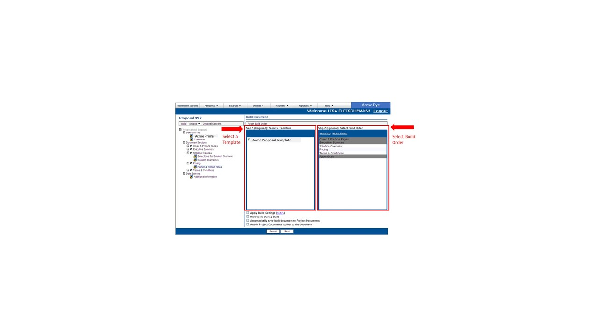

As you provide Acme Eye with the information needed to create your document, Acme Eye
tracks your progress with checkmarks along the document outline. Once all the information is
complete, all the data screens and outline sections will have checkmarks, and you can build
the document.
To build your document, follow these steps:
To begin the build process, click Build.
Acme Eye displays the Build Document screen, as shown in Figure 6-1.
Figure 1. Figure 6-1: Build Document Screen 
Select a Template.
Note: If more than one template is available for the document you are creating, select the template you wish to use. Otherwise, the template is pre-selected for you. You do not need to select a template for your proposal. Acme Eye pre-selects the Acme Proposal Template for you.
Optional: Select build order.
Note: Within the Select Build Order window, the grey shaded list represents parts of the document that are not flexible in terms of chronological order. The non-greyed out items are flexible, and you can change the order based on your own preference.
If you prefer to change the build order, follow this step:
From the Select Build Order window, select the non-greyed out items and move the items order by highlighting the item and clicking on the Move Up or Move Down functionality.
To begin the build, click Next.
Acme Eye creates your document in Microsoft Word for you. While your document
builds, an hourglass icon appears on your Build Document screen. When your document is finished
building, the hourglass icon goes away. A 2MB document builds in around 20
seconds.
Note: Do not attempt to multitask while the document builds.
When your document is finished building, save the document to your desktop.
 appears on your Build Document screen. When your document is finished
building, the hourglass icon goes away. A 2MB document builds in around 20
seconds.Note: Do not attempt to multitask while the document builds.
appears on your Build Document screen. When your document is finished
building, the hourglass icon goes away. A 2MB document builds in around 20
seconds.Note: Do not attempt to multitask while the document builds.